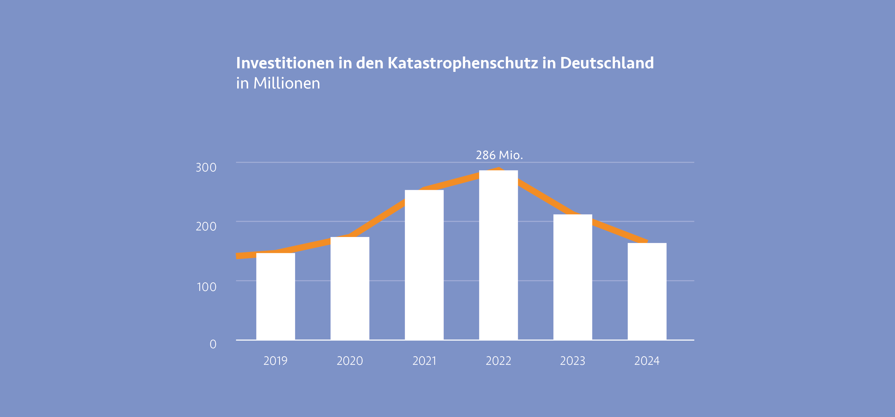

Der Zivil- und Katastrophenschutz erfüllt wichtige Aufgaben zur Prävention und Bekämpfung von Großschadensereignissen in ganz Deutschland. Für die Planung und Umsetzung entsprechender Maßnahmen genötigt es Mittel des Bundes. Stieg der zur Verfügung stehende Etat in den Jahren 2019 bis 2022, durch Naturkatastrophen im Ahrtal, Fluchtbewegungen durch den Angriffskrieg gegen die Ukraine und Implementierungen von Warnsystemen stetig an, so ist seit 2023 ein deutlicher Rückgang der Gelder im Bereich des Zivil- und Katastrophenschutzes zu verzeichnen.
Im Bundeshaushalt von 2024 stehen dem von Nancy Faeser geführten Bundesministerium des Innern und Heimat (BMI) ein Etat in Höhe von 13,3 Milliarden Euro zur Verfügung. Das sind zwar 253 Millionen Euro mehr als im Haushaltsjahr 2023, allerdings kommen die Gelder nicht dem Zivil- und Katastrophenschutz zu Gute. Die Ausgaben des BMI belaufen sich wie folgt: Für Innere Sicherheit stehen mit 6,4 Milliarden Euro etwa die Hälfte des Gesamtbudgets des Ministerium zur Verfügung. Davon erhalten Bundespolizei und Bundeskriminalamt etwas mehr als 3 Milliarden Euro. Durch die angespannte Sicherheitslage im Land sollen mit den Geldern unter anderem 1000 Stellen bei der Bundespolizei bezuschusst werden. Ein weiterer großer Posten stellt die Migration und Situation von Geflüchteten dar. Die Mittel, die das BMI zusammen mit dem Bundesamt für Migration und Flüchtlinge (BAMF) verwalten, belaufen sich auf 2,4 Milliarden Euro. Dabei stehen die Digitalisierung und Beschleunigung der Asylverfahren und Integrationskurse für Geflüchtete im Fokus. Die Bereiche Gesellschaft und Sport und Digitalisierung teilen sich eine Fördersummen in Höhe von 663 Millionen und 668 Millionen Euro. Für die Förderung des Bevölkerungsschutzes werden insgesamt lediglich 570 Millionen Euro beschlossen. Ein Großteil erhält das Technische Hilfswerk und das Bundesamt für Bevölkerungsschutz und Katastrophenhilfe. 1
der Etat im zweiten Jahr in Folge deutlich gekürzt. Das Budget des BBK liegt im Haushalt 2024 bei rund 162 Millionen Euro, ein Rückgang von fast 50 Millionen Euro zum Vorjahresetat von rund 211 Millionen Euro und ein Rückgang von ganzen 122 Millionen zum Jahr 2022 mit Rekordsummen von knapp 286 Millionen Euro. 2 Die deutliche Steigerung der Mittel in den Jahren 2020 bis 2023 ist durch diverse Krisen und Notlagen wie etwa die Flutkatastrophe im Ahrtal, Flüchtlingsströme nach dem Angriff Russlands auf die Ukraine und Auswirkungen der Corona-Pandemie zurückzuführen. Ein weiterer Faktor für eine zusätzliche Bezuschussung des Katastrophenschutzes war die Aussetzung der Schuldenbremse in den Jahren 2020 bis 2022. Somit konnten mehr Gelder für den Katastrophenschutz bereitgestellt werden, als in den Jahren zuvor. Nancy Faeser sprach sich positiv für die Entscheidung der Wiedereinhaltung der Schuldenbremse im Haushalt 2023 aus. 3
 4
Doch die Kürzungen stoßen nicht nur in der Politik, sondern auch bei Hilfsorganisationen und Verbänden auf starke Kritik. Das THW benötige mehr Zuschüsse um die geplante Errichtung zahlreicher neuer Unterkünfte für Ortsverbände zu stemmen und es müssen Kürzungen bei der Warnung der Bevölkerung vorgenommen werden. Auch der ASB äußert Kritik, da die Finanzierung weiterer mobiler Betreuungsmodule somit nicht gesichert sei. Doch neben Geldern fordern Hilfsorganisationen auch Reformen, die es ermöglichen die Freistellung von Helfenden zu erleichtern und die Einführung eines zentralen bundesweiten Krisenmanagements um schnellere Reaktionszeiten umzusetzen. 2 Ähnliche Entwicklungen sind in Bayern zu sehen. Während der Verhandlungen über den Umwelt-Etat des Freistaats Bayerns Anfang Juni 2024 sind weite Teile des Bundeslandes überschwemmt. Doch es wird auch hier kein zusätzliches Geld in den Hochwasserschutz investiert, obwohl aktuell tausende Menschen mit teilweise immensen Schäden zu kämpfen haben. Laut verhandeltem Haushalt sehen im Jahr 2024 und 2025 rund 280 Millionen Euro für den Hochwasserschutz zur Verfügung. Eine Erhöhung trotz aktueller Ereignisse wurde nicht beschlossen. Kritik am Haushalt und an der Hochwasserpolitik der Koalition aus CSU und Freien Wählern gibt es unter anderem von Patrick Friedl: „Was muss eigentlich noch passieren, dass Sie die Kommunen wirksam unterstützen? Sie sind es, die die Hauptlast der Klimaschäden tragen. Warum handeln Sie nicht in dieser Woche?“ Diesen Aussagen schenkt die Regierung wenig Beachtung und verweist auf die 300 gebauten Rückhaltebecken, der Renaturierungen von Flüssen und der Rückverlagerung von 73 Deichen. Doch die Opposition sieht noch viel Luft nach oben. So werden Projekte oft in die länge gezogen, werden nicht rechtzeitig fertiggestellt oder scheitern an aufwändigen Freigabeverfahren. Zwar werden bis 2030 im Freistaat insgesamt 2 Milliarden Euro für den Hochwasserschutz veranschlagt, die Summe stagniert allerdings. Durch steigende Baukosten und Inflation steht am Ende sogar weniger Geld zur Verfügung als noch vor einigen Jahren. 5
Die Bezuschussung des Bevölkerungsschutzes und die stabile Investition durch Hilfsgelder für Projekte, Hilfsorganisationen und der Stärkung der Resilienz der Bevölkerung sind essentiell für einen einwandfreien Bevölkerungsschutz in Deutschland. Nur durch langfristige Investitionen und Sicherheit in der Planung und Umsetzung von Projekten im Bereich des Krisenmanagements können Krisen nachhaltig und vorausschauend bekämpft und eingedämmt werden. Die Zerstörung durch Naturkatastrophen und deren Folgekosten sind exponentiell teurer und massiv aufwändiger, als ein zukunftsträchtiger Bevölkerungsschutz. Wissenschafter:innen, Forscher:innen, Hilfsorganisationen und Betroffene appellieren schon seit Jahren an die Politik. Bisher allerdings nur mit mäßigem Erfolg. Dabei könnte im gesamten Bundesgebiet mit durchdachten und durchaus kostenschonenden Mitteln eine deutlich höhere Resilienz anstreben und erreichen werden, wären die nötigen Mittel vorhanden.
-
Vgl. Bundesministerium des Innern und für Heimat: Wir stärken die innere Sicherheit, jetzt und in Zukunft, 2024, https://www.bmi.bund.de/SharedDocs/kurzmeldungen/ DE/2024/01/haushalt-bt.html ↩︎
-
Vgl. WDR: Kürzungen beim Katastrophenschutz – Kritik aus NRW, 2023, https://www1. wdr.de/nachrichten/kuerzungen-haushalt-faeser-katastrophenschutz-100.html ↩︎ ↩︎
-
Vgl. Deutscher Bundestag: Kritik an Kürzungen im Etat von Innenministerin Nancy Faeser, 2022, https://www.bundestag.de/dokumente/textarchiv/2022/kw36-de-inneresheimat ↩︎
-
Abb.: Investitionen in den Bevölkerungsschutz https://www1.wdr.de/nachrichten/kuerzungen-haushalt-bundesinnenministerin- faeser-katastrophenschutz-100.html ↩︎
-
Vgl. BR: Bayerns Umwelt-Etat – Keine Erhöhung des Hochwasserschutzes, 2024, https:// www.br.de/nachrichten/bayern/bayerns-umwelt-etat-keine-erhoehung-hochwasserschutz ↩︎